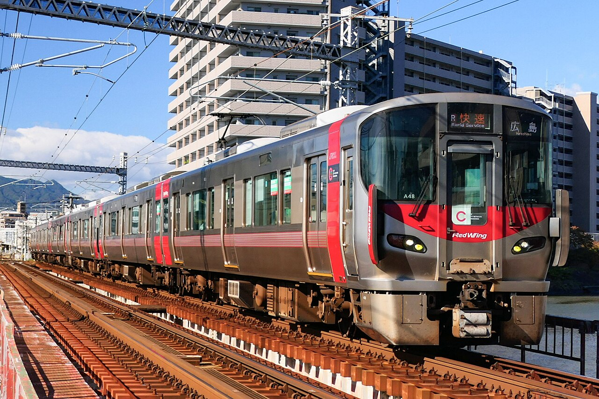
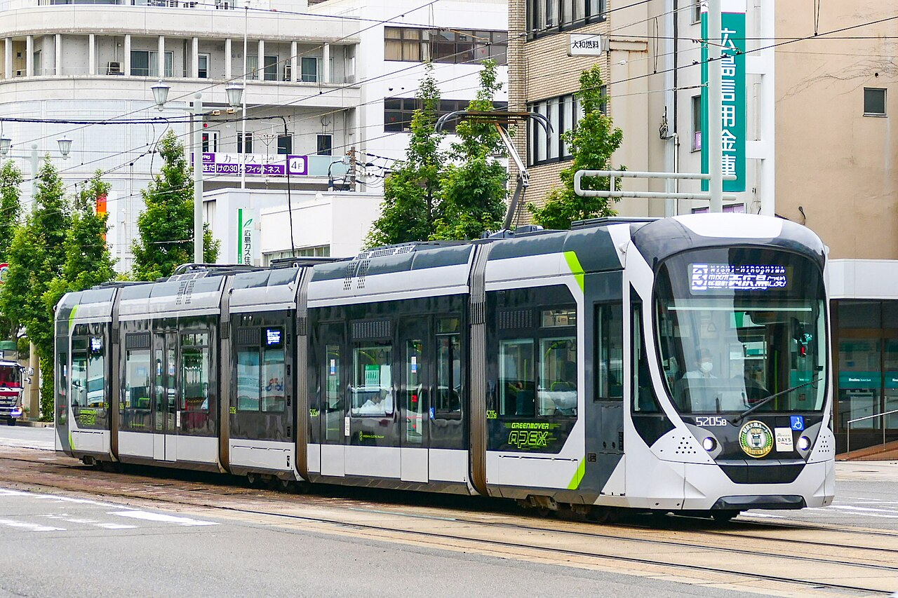
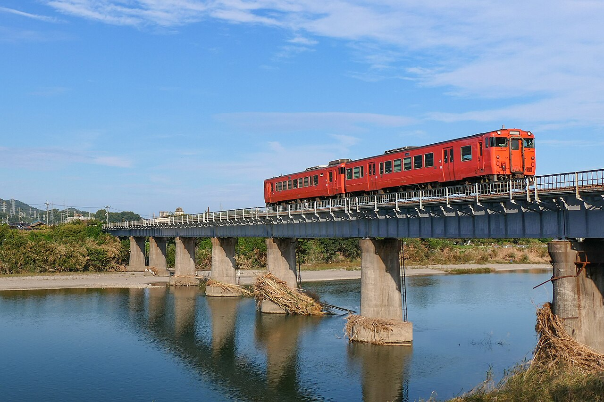
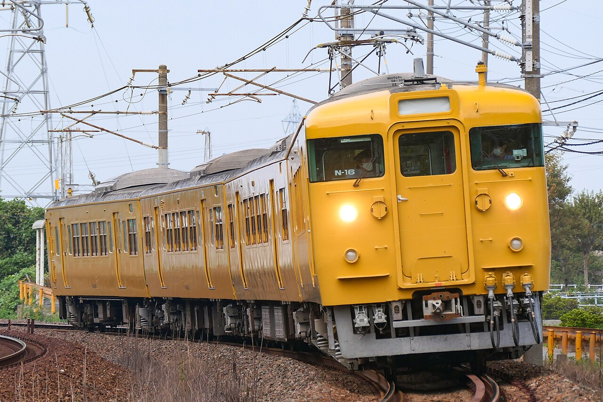
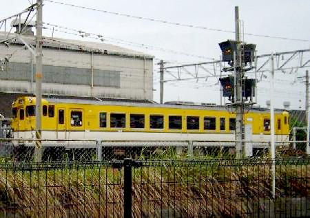
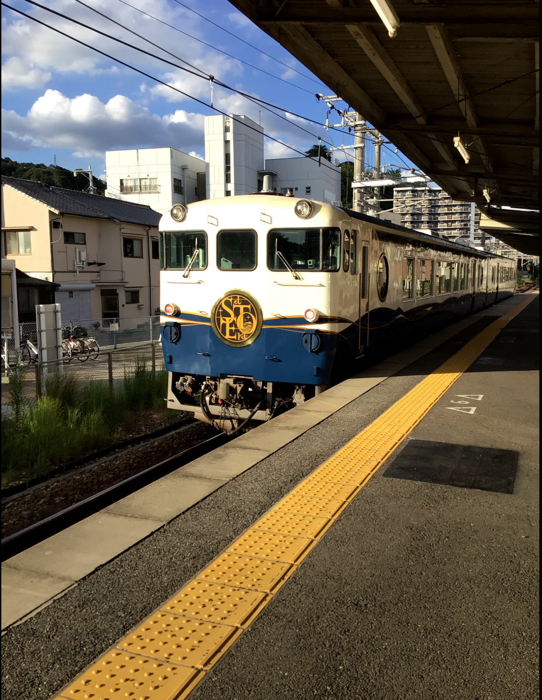

← アプリにもどる写真・路線の出典
確認日：2026-09-22（広電5200形・岩徳線キハ40系は2026-09-24）。鉄道好きの家庭向け非公式学習アプリです。JR各社・撮影者との提携を示すものではありません。車両写真の著作権は各権利者に帰属します。
路線図
山陽本線 徳山〜三原／可部線 全線／呉線 全線／岩徳線 全線／芸備線 広島〜下深川。駅順・接続は以下の資料を参照した独自の模式図です。距離・縮尺・線路の曲がり方を正確に描いた地形図ではありません。実際の運行情報・停車パターンは扱いません。芸備線は下深川から先、新幹線・錦川清流線などは未収録です。
JR西日本 広島エリア駅ナンバー路線図
JR西日本 岩徳線 2235D 駅順
JR西日本 呉線 区間時刻表
JR西日本 山陽線 駅順（寺家・新白島含む）
JR西日本 山陽線 徳山〜岩国 駅順
カードをもらえる駅
獲得駅はゲーム上の到達目標です。写真の撮影地や車両の運行区間の境界を意味しません。写真は撮影当時の姿です。
227系0番台 Red Wing ― 玖波駅から最初の1区間を開通したとき

ひろしまエリアの赤い電車。山陽本線・呉線・可部線で活躍する227系だよ。
車両・地域の参考資料
写真：JRW Series227-0 A48.jpg
作者：MaedaAkihiko
原典 ／ CC0
変更：Wikimedia提供の縮小画像を使用。写真の描き換えなし。
写真説明：A rapid train "City Liner" bound for Hiroshima, led by the 227-0 series A48 formation, running between Itsukaichi Station and Shin-Inokuchi Station on the JR Sanyo Main Line.
広島電鉄5200形 Greenmover APEX ― 宮島口駅

2019年、広電宮島口駅で出発式をしてデビューした路面電車。5つの車体がつながっているよ。
車両の参考資料（マイナビニュース 2019年3月14日） ／ 近畿車輛
写真：Hiroden Series5200-5205B Ekimae-route-HM.jpg
作者：MaedaAkihiko
原典 ／ CC0
変更：Wikimedia提供の縮小画像（長辺1280px）を使用。トリミング・AI補正なし。
写真説明：A train bound for Nishi-Hiroshima, operated by 5200 series 5205 set, runs between Takanobashi Station and Shiyakusho-mae Station on the Hiroshima Electric Railway Ujina Line.
500系新幹線 ― 広島駅

広島駅には、山陽新幹線もやってくるよ。これは新幹線の500系。在来線とは別の線路を走るよ。
車両・地域の参考資料
写真：JR West 500 series shinkansen set V8 at Hakata Station 20200115.jpg
作者：Rick888chen
原典 ／ CC BY-SA 4.0
変更：Wikimedia提供の縮小画像を使用。写真の描き換えなし。
写真説明：JR West 500 series shinkansen set V8 at Hakata Station
JR貨物 EF210形（ECO-POWER 桃太郎） ― 西条駅

山陽本線でも貨物列車をひく「桃太郎」。重い荷物を運ぶ電気機関車だよ。
車両・地域の参考資料
写真：JRF EF210-111 20211218.jpg
作者：Mitsuki-2368
原典 ／ CC BY-SA 4.0
変更：長辺1280pxへ縮小・JPEG再圧縮。トリミング・描き換えなし。
写真説明：山陽本線 庭瀬〜中庄間を走行するEF210-111号機（キャラクターラッピング仕様）
227系500番台 Urara ― 三原駅

岡山・備後エリアの227系。三原まで来ると、Uraraの走るエリアにつながるよ。
車両・地域の参考資料
写真：227-500 series "Urara" at Uno Station.jpg
作者：Travelweb.au
原典 ／ CC0
変更：Wikimedia提供の縮小画像を使用。写真の描き換えなし。
写真説明：宇野駅に停車する227系500番台Urara
227系500番台 Kizashi ― 徳山駅

山口エリアの227系。山陽本線の岩国〜下関で運行する、黒と金色のKizashiだよ。
車両・地域の参考資料
写真：家族撮影の227系500番台 Kizashi.jpg
作者：家族撮影
原典 ／ 家族提供写真
変更：撮影者提供の写真をそのまま使用。AI補正・描き換えなし。
写真説明：線路上を走る227系500番台Kizashiを遠方から撮影した写真
キハ40系（岩徳線） ― 岩国駅

岩徳線を走るオレンジ色のディーゼル車。写真は西岩国と川西のあいだで、錦川の鉄橋をわたるところだよ。
車両・地域の参考資料（写真の説明）
写真：JRW Gantoku-line Kiha47.jpg
作者：MaedaAkihiko
原典 ／ CC BY-SA 4.0
変更：Wikimedia提供の縮小画像（長辺1280px）を使用。トリミング・AI補正なし。
写真説明：A local train of JR West's Kiha 40 series 47 and 40 that crosses the Nishiki River between Nishi-Iwakuni Station and Kawanishi Station on the Iwantoku Line.
115系3000番台 ― 南岩国駅

山陽本線で活躍してきた黄色い電車。写真は山口エリアの115系3000番台だよ。
車両・地域の参考資料
写真：JRW Series115-3000 N-16.jpg
作者：MaedaAkihiko
原典 ／ CC BY-SA 4.0
変更：Wikimedia提供画像を使用。トリミング・AI補正なし。
写真説明：A local train with the 115-3000 series N-16 formation that runs between Shin-Shimonoseki Station and Chofu Station on the Sanyo Main Line.
キハ40形（広島色） ― 下深川駅

芸備線にゆかりのあるディーゼル車。写真は2004年の広島色。昔のすがたも集めよう。
車両・地域の参考資料
写真：Jrw-dc40-hiroshima.jpg
作者：Taisyo
原典 ／ CC BY 3.0
変更：Wikimedia提供画像を使用。トリミング・AI補正なし。
写真説明：2004年6月本人撮影
40系気動車
etSETOra（エトセトラ） ― 呉駅

呉線を通って瀬戸内を旅する観光列車。海の青と、波の白をまとっているよ。
車両・地域の参考資料
写真：西広島駅を通過するetSETOra(2021年).jpg
作者：勇敢な夕刊
原典 ／ CC BY-SA 4.0
変更：Wikimedia提供画像を使用。トリミング・AI補正なし。
写真説明：西広島駅を通過するetSETOra
家族撮影写真
Kizashiの家族撮影写真を本アプリで使用しています。AI補正・描き換えはしていません。
{kind=link}
{kind=link}
{kind=link}
{kind=link}
{kind=link}
{kind=link}
{kind=link}
{kind=link}
.jpg){kind=link}